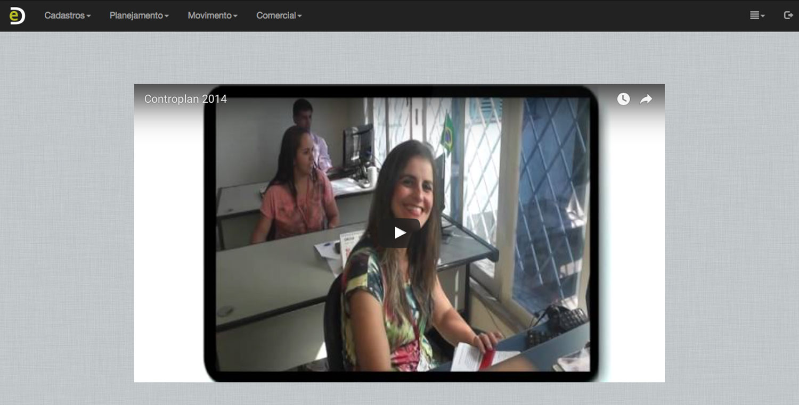
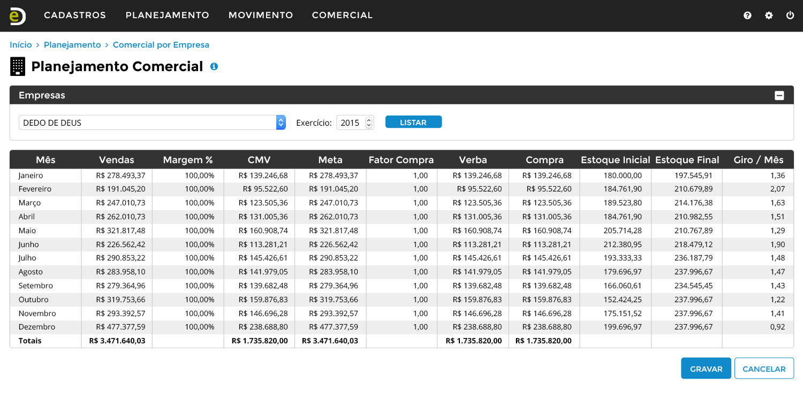
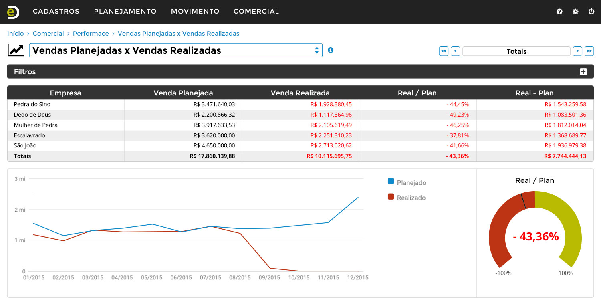
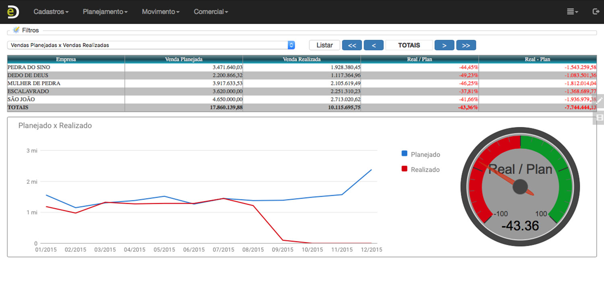
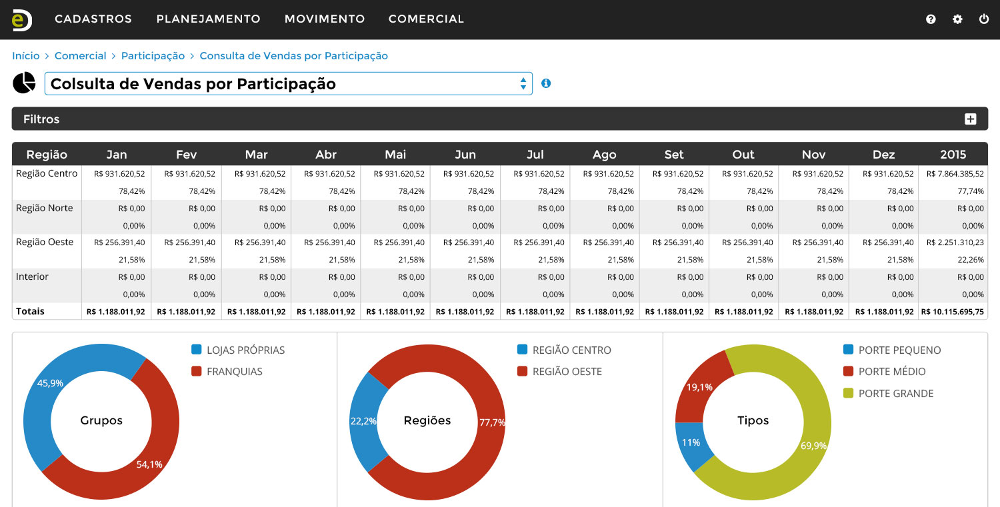
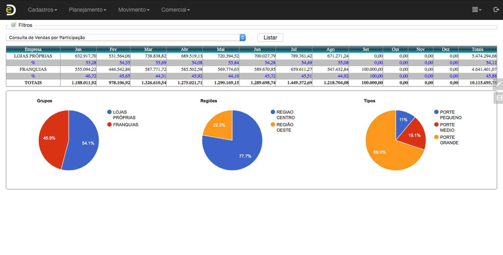
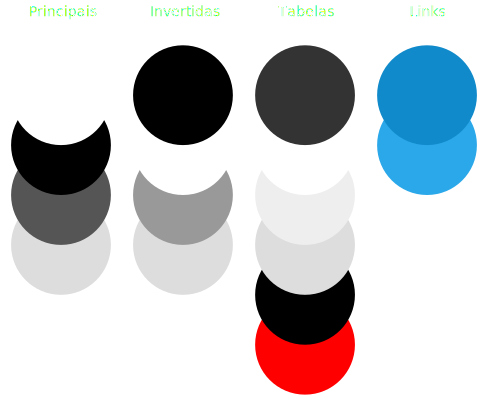
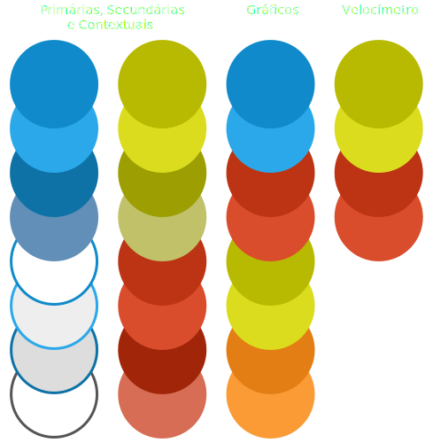

e-Diretor
e-diretor.com.br under development
Redesign of the administative management web-application e-Diretor and its landing page.
The objective was to give it a new look, keeping its compability and focus in laptops and desktops use, creating a coherent visual system with intuitive and easy to learn curve.


Drag to view


Drag to view


Drag to view


Drag to view
Colors
The color sequence covers all needs of the application, evolving from the gray shades to a easy to read blue for its action centred elements.


Landing Page
For the landing page the concern was to bring up-front the product itself, showing its promotional video, screens and features.
Click here to see it live.